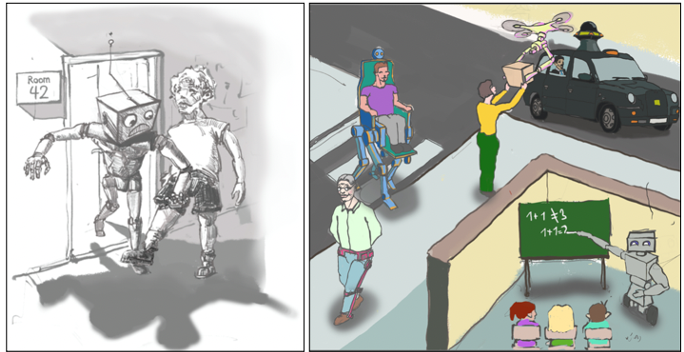

| Home | Speakers | Program | Call for papers | Organizers |
A big challenge of a symbiotic society is how autonomous and interactive robots should assess the trustworthiness of their human or robotic partners as a reliable source of information. This is more so if we are to permit robots to learn from humans and each other autonomously. The human trust in robots problem has been receiving increasing attention in the literature, in particular in the Human-Robot Interaction (HRI) domain. Consequently, we have a fair understanding of the determinants of how humans form trust in artificial agents. We argue that it is time to close the gap between human and robot trust, thereby making the grounds for multidisciplinary research on reciprocal trust.
Despite growing interest in deploying artificial interaction partners such as humanoid robots or mobile robots into society, the research focusing on how to build or learn models of robot trust is very limited. With this workshop, we aim to gather researchers from multiple disciplines --including artificial intelligence, robotics, interaction design, psychology, neuroscience, ethics, and law-- to address the scientific, technological, and social issues related to robot trust formation in other agents and its deployment. Naturally, this topic is closely related to artificial empathy, deception detection, interaction design, responsible artificial intelligence, and the legislation thereof. As such, with the proposed workshop we aim to enable participants to discuss and expand their frontiers in the following research themes/questions.